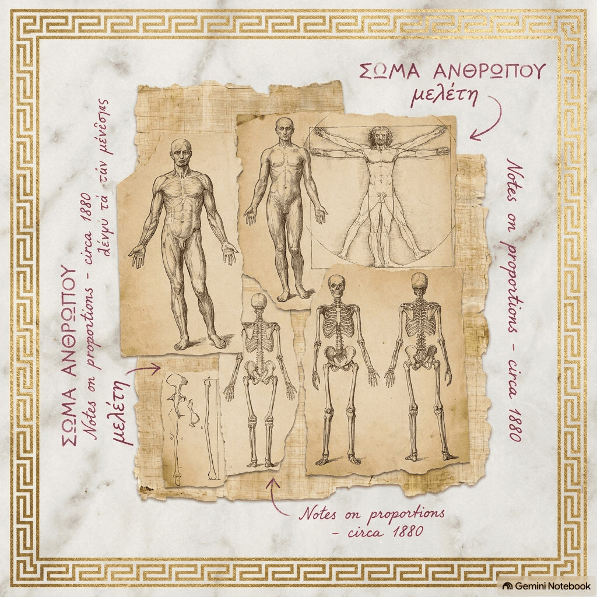

I
Prologo: My fogged-up mirror
"I’ve flipped through every anatomy book in school
Trying to explain this warm feeling on repeat
That no matter how much I wash, it clings like a fool"
PÁGINA DEL DIARIO / ENTRADA 01:
"Revisé los libros de la escuela otra vez. Quería entender por qué siento la piel ardiendo cada vez que lo veo caminar por el pasillo, incuso cuando tiene la toalla puesta despues de darse una ducha no puedo dejar de imaginar como se veria sin ella, Me lavé la cara con agua helada frente al espejo, pero el vapor no se va, y esto que siento tampoco..."